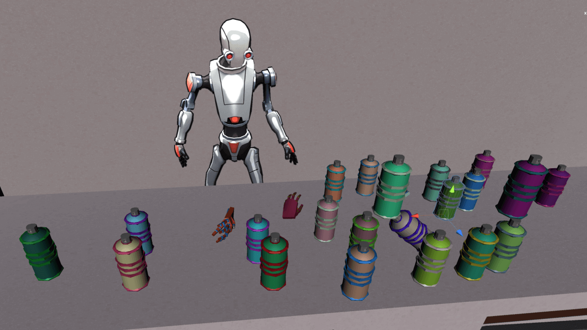

HandyBot

This game was made in a group of 4 Students and developed in the BTS Game Programming and Game Design as a 4th Semester Project. The only requirement of the Project was Virtual Reality. We used Unity and the VRTK plugin.
In HandyBot the player plays as a Robot with no hands. While looking around he will find hands lying around which will give him abilities. For example, he could find the gun hand which shoots a finger or the duck hand which makes a quack sound when he uses it.